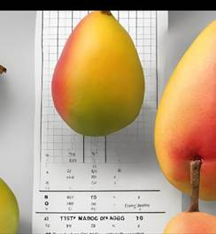

**Informations** Name :
Zalka MARE Title : B.Sc
in Mechanical
Engineering - Agricultural Mechanization Email :
zalikamare0708@gmail.com
CW : (05/11/2025)
|
Project/Task |
Purpose |
Logos |
Updates |
Links |
||
|
Calculation of depreciation and annual
cost for mango processing equipment |
To
estimate depreciation of land and machinery for a 2hectare plantation, and
determine the cost per mango. |
|
·
Considered
depreciation only for machinery and equipment ·
Calculated
annual machinery depreciation and total yearly operational cost ·
Determined
cost per mango to support financial evaluation. |
|||
CW : (30/10/2025)
|
Project/Task |
Purpose |
Logos |
Updates |
Links |
|
|
Specification of
final mango characteristics to guide machine selection |
To define
the final form, size, and weight of mangoes for processing, enabling the
selection of suitable cutting and drying machines for high-quality dried
mango production. |
 |
·
Determined final product form (slices, cubes, or strips) and weight. ·
Measured and recorded physical parameters (size, fiber content,
moisture). ·
Shared specifications with responsable for machine selection. |
Technical
specifications of the Keitt variety.docx |
|
CW : (22/10/2025)
|
Project/Task |
Purpose |
Logos |
Updates |
Links |
|
Selection of
crops suitable for sustainable agriculture and assessment of labor reduction |
To
identify the most suitable crop for sustainable farm, quantify the reduction
in labor achieved through mechanization, and demonstrate the impact of the
harvester on productivity. |
|
·
Selected crop based on market value,
storability, and mechanization suitability. ·
Demonstrated the
performance of mechanical harvesting over manual methods ·
Integrated numerical estimates for labor reduction |
|
CW : (19/10/2025)
|
Project/Task |
Purpose |
Logos |
Updates |
Links |
|
Presentation of Thesis Defense Theme :
Design of a Multifunctional Harvester for Carrot, Onion, and Lettuce. |
To Present the problem faced by farmers, present our
innovative solution, and describe the expected results in terms of
efficiency, labor reduction, and crop loss minimization. |
|
· To define the Key challenges of manual
harvesting · Present the Innovative solution · Demonstrate the machines working
principle through 3D design. · Expected outcomes: lower labor, reduced
losses, higher productivity |
Presentation_Thesis
final.pptx |
CW : (02/10/2025)
|
Project/Task |
Purpose |
Logos |
Updates |
Links |
|
Tree Plantation Technical and Financial
Analysis Excel Update Following Comments |
To improve the overall quality,
accuracy, and usefulness of the tree plantation analysis by ensuring informed
decision-making. |
|
· Provide
references for calculations · Include water
requirements per tree · Calculate the
ROI (Return on Investment) to evaluate the financial viability of the
project. |
|
CW : (25/09/2025)
|
Project/Task |
Purpose |
Logos |
Updates |
Links |
|
Consolidation of calculations in a Excel file |
The objective of this financial
analysis is to provide an accurate and realistic assessment of the project's
viability and economic sustainability. |
|
· Calculations of necessary investments · Perform cost and revenue analysis |
|
CW : (17/09/2025)
|
Project/Task |
Purpose |
Logos |
Updates |
Links |
|
Financial and
strategic planning for mango cultivation |
The objective is to assess and
demonstrate the technical and financial feasibility of mango cultivation at
different scales, highlighting its yield potential, the investments required,
its profitability, and its long-term viability. |
|
· Agronomic
planning ·
Financial
analysis ·
Equipment
pricing based on farm size · Monitoring tree and fruit health |
finacial
and farming size.xlsx |
CW: (11/09/ 2025)
|
Project/Task |
Purpose |
Logos |
Updates |
Links |
|
Farm Size and Yield Potential |
Show the relationship between farm size and mango yield,
showing how scaling up from a small orchard to a larger farm impacts
production. Also provide concrete figures to help understand
whether a farm produces 1 ton or more based on its size to facilitate
decision-making on the right scale of farming. |
|
· From Small
Orchards to Large Farms: How Much Can Be Produced? · Working assumptions · Estimated
production based on farm size · Data visualization · Results interpretation |
Farm
Size and Yield Potential.pptm |
CW : (04/09/2025)
|
Project/Task |
Purpose |
Logos |
Updates |
Links |
|
Plants Growing and Harvesting using modern & Smart Techniques |
Establish a sustainable operational farm for mango
production, from nursery to harvest, using modern and intelligent techniques
such as sensor-controlled drip irrigation, automatically dosed liquid
fertilizer application. |
|
·
Mango areas production in BF ·
Comparative
study of mango varieties for drying ·
Variety
Selection for Mango Drying ·
Mango plant nurseries ·
Plant transplanting ·
Mango tree production cycle · Irrigation
and composting system |
|